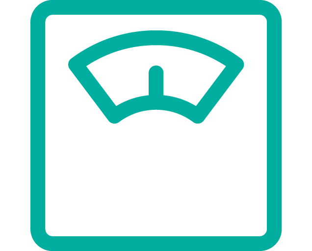
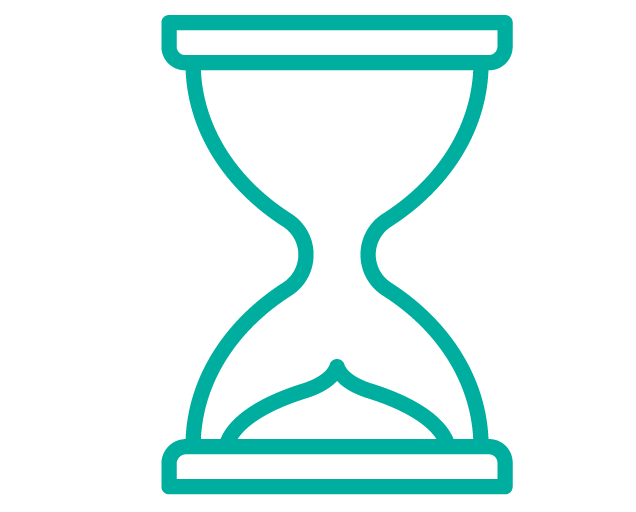

Masse corporelle (en kg)
 Durée de pratique (en min)
Assurez vous de bien renseigner tous les champs, afin d'obtenir la valeur la plus exacte possible, ou réinitialisez pour reprendre votre saisie.